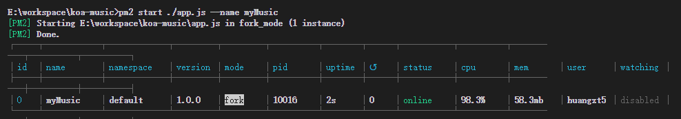
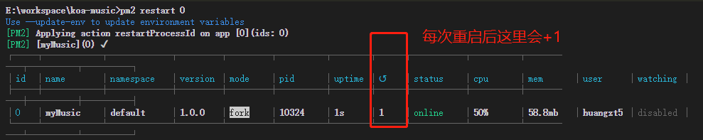
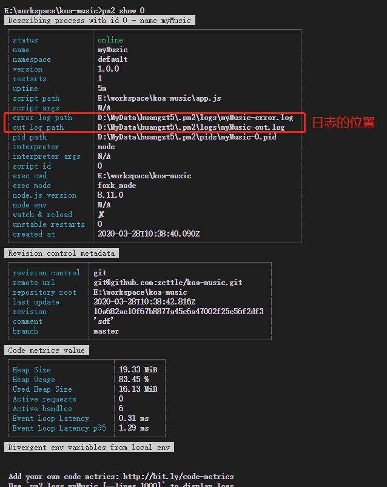
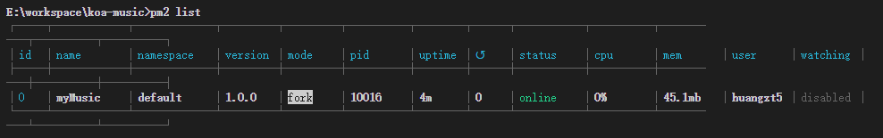
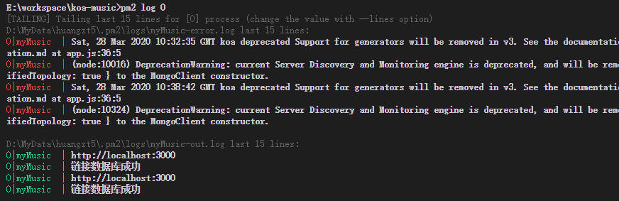
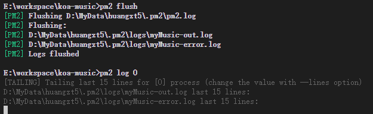
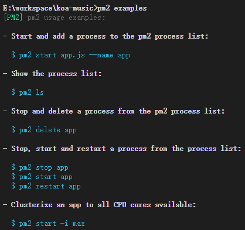

001-pm2的命令
1 启动
pm2 start [./app.js] --name [起的名字]
--name [projectname]可以省略，省略的话就会以[./app.js]的文件名命令。我们很多项目都会用app.js作为入口，为了方便管理，给每个项目加上--name给其命好名。
比如启动
# 启动服务，起名叫myMusic
pm2 start ./app.js --name myMusic
# 启动服务，参数 `-i 3` 表示启动3个进程，用户访问的时候回随机一个
pm2 start ./app.js -i 3 --name myMusic

2 重启
# 重启
pm2 restart [all | name | id]
# 0秒重启，一般代码更新了执行这个reload就够了
pm2 reload [all | name | id]

3 停服务
pm2 stop [all | name | id]
pm2 stop all: 表示停止所有程序
服务停了还会在list中显示，要通过pm2 delete删除
4 删服务
pm2 delete [all | name | id]
5 查看详细信息
pm2 show [name | id]

error log path: 是错误日志的位置out log path: 是正常日志的位置
对于日志有专门的命令可以查看内容：pm2 log
6 查看启动的服务
pm2 list

7 查看日志
# 查看历史日志
pm2 log [name | id]
# 查看实时日志
pm2 monit [name | id]

8 清除日志文件内容
pm2 flush

9 查看常用命令
pm2 examples
